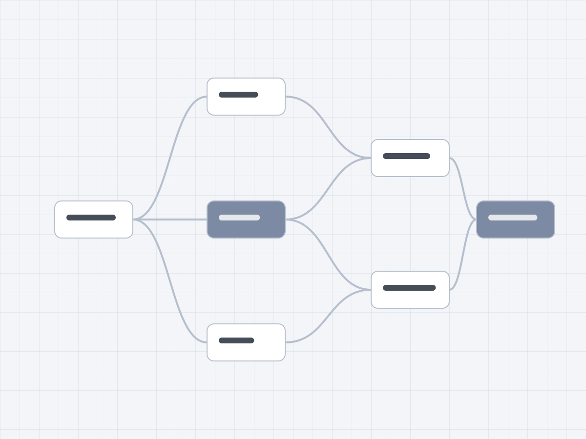
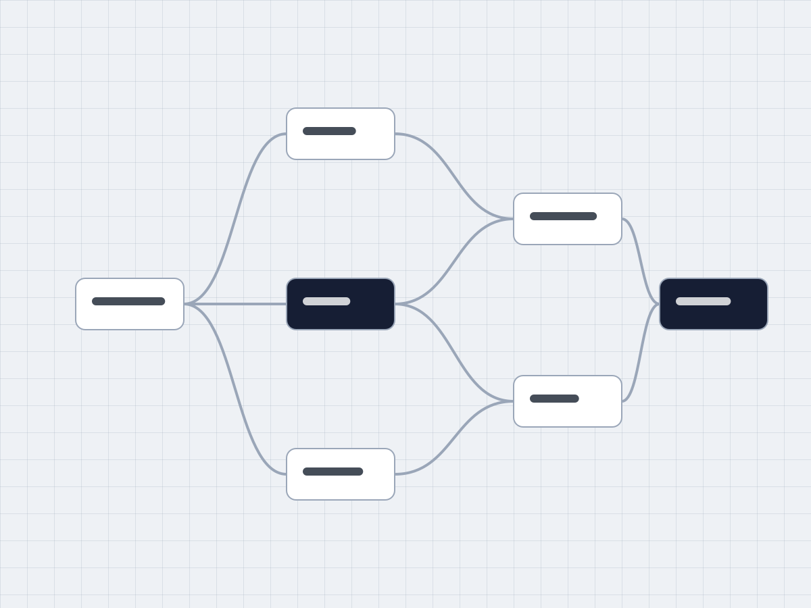
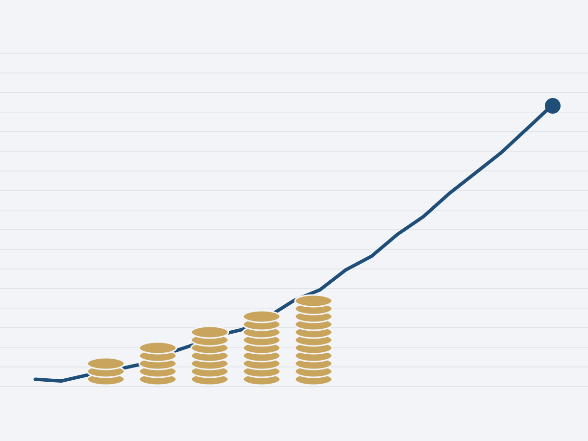

Suksesi usaha keluarga generasi kedua
Menata ulang aset Rp1,1 T agar tiga bersaudara bisa meneruskan usaha tanpa sengketa.
Masalah
Tiga bersaudara mewarisi usaha distribusi dan aset properti. Tanpa rencana tertulis, setiap rapat keluarga berakhir tanpa keputusan.
Peran saya
- Memimpin 14 rapat keluarga bersama penasihat pajak dan notaris.
- Menyusun peta aset dan skenario peralihan lima tahun.
- Menjaga satu dokumen keputusan yang disetujui ketiga ahli waris.
- Aset yang ditata
- Rp1,1 Tnaik, baik: +77%
- usaha, properti, dan portofolio
- Rapat keluarga sampai sepakat
- 3turun, baik: dari 11
- per keputusan besar
- Biaya pajak peralihan
- −18%turun, baik: −18%
- dibanding skenario awal



Proses
Kami mulai dari pertanyaan, bukan produk: siapa yang ingin menjalankan usaha, siapa yang ingin keluar, dan apa yang dianggap adil oleh orang tua.
Setiap skenario ditulis dengan angka pajak, risiko, dan dampaknya pada usaha, lalu dibahas satu per satu.
Keluarga tidak butuh produk baru. Mereka butuh satu dokumen yang sama-sama mereka pahami.
Pemutar YouTube baru dimuat setelah tombol putar diklik.
Hasil
Ketiga bersaudara menandatangani rencana suksesi dalam tujuh bulan. Usaha tetap berjalan tanpa gangguan, dan aset yang ditata kini Rp1,1 T.